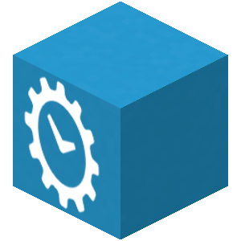

Hey look, it's a Minecraft server!
How to Connect
- You'll need a copy of Minecraft: Java edition. You can purchase and download it here.
- Inside Minecraft, click Multiplayer > Add Server, then in the Server Address field, enter
142.4.207.225:25657, and hit done.
- Now select the Steamblocks server and press Join Server, and you're all set!
Connecting with Bedrock Edition
It seems like it's possible to connect via some console editions using a proxy client. I can't really test this since I don't have a console, but it seems like Geyser may do the trick.
Map
Here's a live map of the server.
Click here if you want to see the full map
And a sheet containing a list of locations you might be interested in.
Some useful commands
/sethome: Sets a home point.
/home: After 5 seconds, warps you to the point you set with
/sethome.